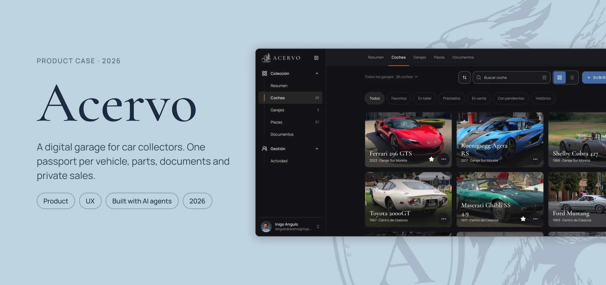
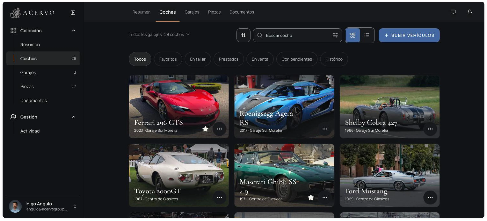
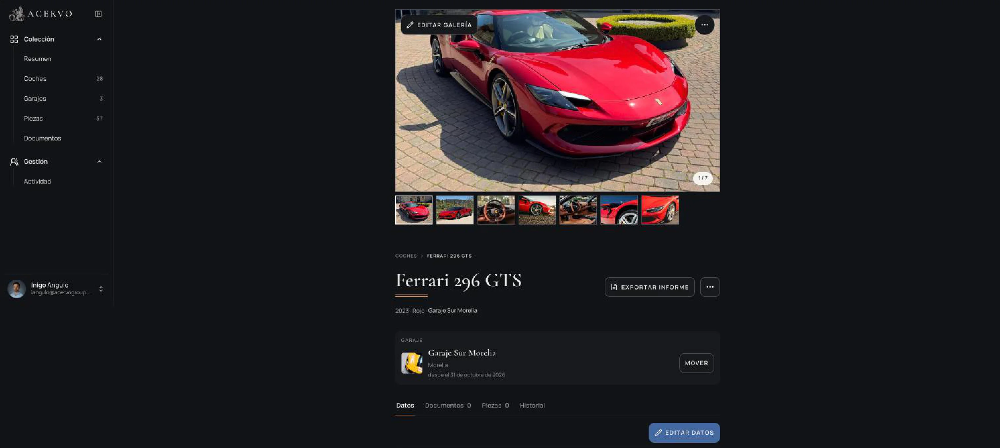
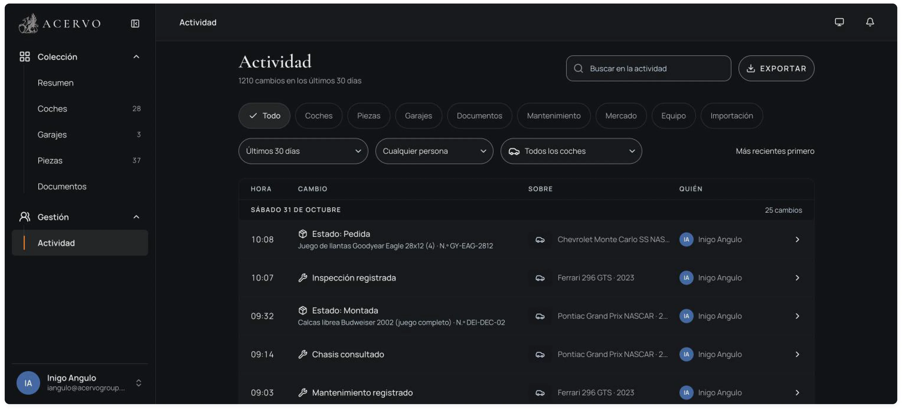
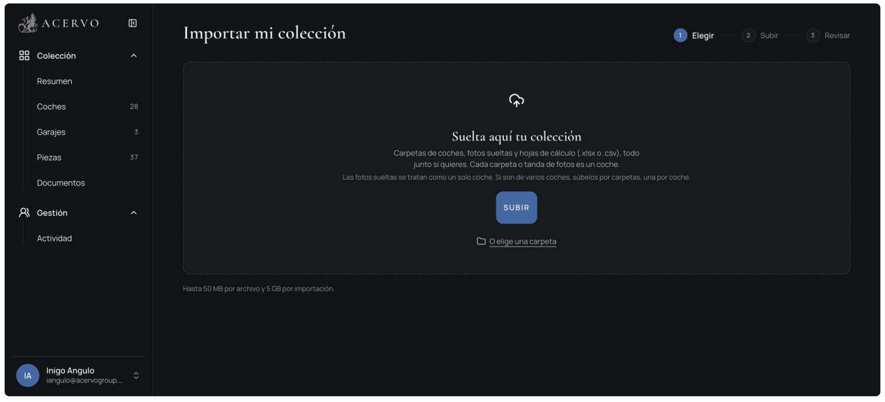
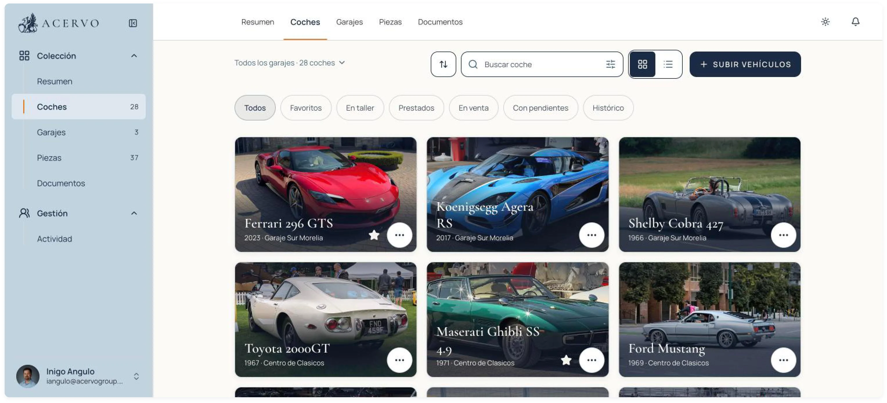
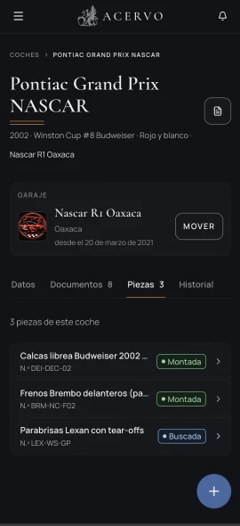
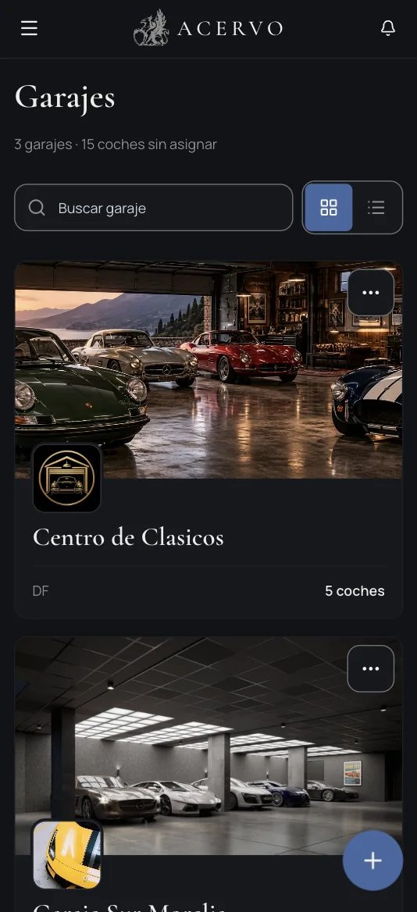
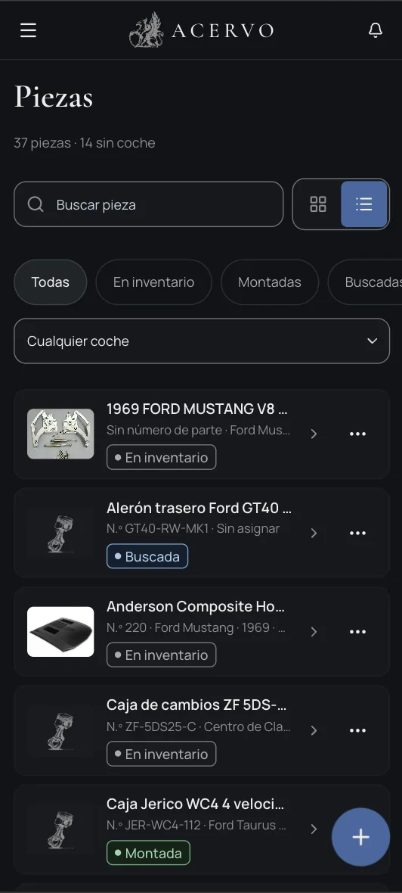
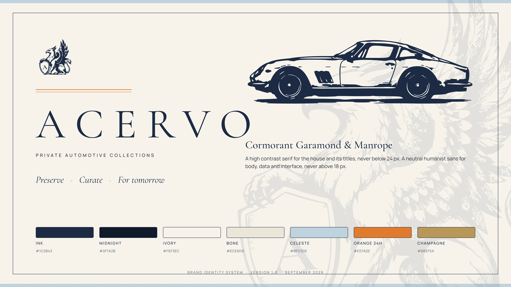

One person designed and operates a production platform for serious car collections, with an AI engineering team built around it.
Three partners, no engineering team, no funding until the MVP proved itself. I defined the product, designed it in Figma, built the engineering team out of eight AI agents, and designed the delivery system that lets one person ship to production every few days without losing authority over what ships. Two human gates: every decision is mine, every release is approved by me.
Acervo is a private management platform for automotive collections in Mexico and Latin America: a digital passport per car, garages, parts custody, AI assisted onboarding, an audit trail on every change and a sealed-offer private market. It runs at app.acervogroup.com, by invitation.
I did not simply use AI to build a product. I designed and operate a product development system in which specialised agents deliver production software under human authority. The hard problem was never generating code. It was deciding who decides, who executes, who may touch what, and what counts as done.
ENGINEERING OUTCOMES · measured in the repository, the task board and the promotion issues · Sept 16 to Nov 2, 2026


Production, November 2026. The collection, filtered the way an owner thinks: favourites, in the workshop, lent, for sale, with pending items, history.
A hundred cars across several cities, managed in Excel, WhatsApp and one trusted person’s memory. The obvious plan was an agency. The real bottleneck was never typing code.
Serious collections in Mexico range from a handful of cars to more than a hundred, spread across garages in different states. Records are inconsistent, provenance is hard to prove, parts go missing between workshops, and every request from an insurer, a buyer or a customs lawyer starts a scramble through folders and chats.
In September 2026 I started Acervo with two partners: one with field experience and a network of collectors, the other leading sales and growth. The first test collection was real: over 100 cars plus a spare parts inventory, owned by a family in that network. The constraint was explicit: nothing signed and nothing funded until the MVP proved it was worth it.
A spec, a Figma file and an agency is two to four months and a five figure budget before a collector touches anything. The bottleneck was deciding what to build, in what order, and knowing when something was done. That is product work. If the decisions stayed mine and the typing was delegated, one person could run a small engineering team. The design problem became the team itself.
Human authority, orchestration, build, judgment. Eight agents and one independent verifier. The architecture is not what each one does. It is what each one is not allowed to touch.
Each agent is a file under .claude/agents/: a mandate, a model, a boundary. Build agents run on the cheaper model. The three judgment agents run on the strongest one and prove failures, they never fix them.
.claude/agents/ plus one independent verifier · colour is the kind of power, not seniority
Cheap models build. Strong models judge. The expensive tokens go to saying no.
A digital passport per car, garages that log every move, parts with custody, and an onboarding that accepts whatever the collector already has.
The owner’s mental model is simple: my cars, where they are, what is on them, what paper proves it, and who touched what. The information architecture follows it literally. One collection holds garages; garages hold cars; a car carries its photos, documents, parts, maintenance and history; every change on any of them lands in one activity log with an author and a timestamp.
The passport. A collector’s problem is not storage, it is retrieval under pressure: an insurer, a buyer or a customs lawyer asks for one car’s proof and it lives in four places. So each car is one page with everything on it and one button to export the report. The gallery comes first because that is how collectors recognise their own cars; data, documents, parts and history are tabs below it.
Garages and movements. A hundred cars across several cities means the most frequent question is “where is it now”. Garages are first class, a car always belongs to one, and moving cars is a batch action because cars travel to shows and workshops in groups. The garage card on the passport shows since when the car has been there.
Parts and custody. Parts go missing between workshops because nobody records who has them. Each part has a status (in inventory, mounted, wanted) and a holder, and the activity log shows the hand-offs. That is the whole design: make the ambiguity visible.
AI assisted onboarding. Collectors arrive with folders, photos and spreadsheets. The import accepts them as they are, one folder per car, and produces draft records. From photos the system suggests make, model, generation, body, colour and year range; from a plate photo it reads the VIN. Every suggestion is a draft until a person confirms it, and the log records who confirmed. The same rule that governs the agents governs the product.

Passport · gallery, garage, documents, parts, history, report export
Activity · 1,210 changes in 30 days, each with who and on what
Import · folders, photos and spreadsheets, one folder per car
Light mode · the brand’s ivory canvas, same componentsProduction, November 2, 2026. The collection shown is my own test set; the first family collection is loading behind it.

Passport
Garages
Parts & custodyMobile first and one-handed, for the person standing in the garage on a bad connection. Spanish (es-MX) throughout.
PRODUCT OUTCOMES · what has been measured, where, and what has not been validated yet
Ink, ivory and a griffin. A brand built to feel like the paperwork of a serious house, not like software.
I designed the identity before the first screen, because a collector decides in seconds whether a tool deserves his cars. The reference is ceremonial paper: ink on ivory, a double orange stripe as the only signal of action, a heraldic griffin holding a shield with the house initial, and a car drawn in the same engraved language as the emblem. Cormorant Garamond for everything the house says, Manrope for everything the system says. The brand lives in Figma as variables and components; the app and the landing consume the same tokens.

Brand identity system v1.0, September 2026. Designed in Figma as a variable collection and a component library; this slide is built from those components, and the app, the landing and the PDF report read from the same tokens.
Eight steps, five lanes, one human gate. A worker never sees main, a decision is one id and one letter, and the lead may merge only with five green checks on the exact SHA.
The process is the one I would run with a human team, made stricter because agents will happily report a template as a result. Every ticket carries a measurable acceptance criterion. Every delivery lists those criteria one by one as VERIFIED or IMPLEMENTED, with the PR, the SHA and the CI run id. Every open question comes back as a numbered decision I answer with a letter: 374-4 A. Click a step.
One step needs a human: the decision. Everything else is agents bound by evidence they cannot fake: a run id, a SHA, a red suite when a policy is broken on purpose.
Main freezes, a pen test says PASS, every screen gets my visual PASS on staging, nine production queries are measured by a session that did not write the code, and then one human types /aprobar.
Promotions are where an agent team is most dangerous, because everything looks done. So the lead cannot touch the promotion workflow at all, the security agent runs a full pen test on the exact candidate, and the production measurements are taken by a separate session that reports back what it actually saw. A template with placeholders is not a measurement. Fifteen promotions have gone through this in seven weeks.
Figma feeds the code, every worker gets its own database, staging is a real environment, and the only road into production is a workflow nobody in the build can edit.
Nothing exotic on purpose: the team was new, the stack should not be. Next.js on Vercel, Supabase for Postgres with row level security, Auth and Storage, the Claude API for recognition and document extraction. What is unusual is how the pieces are wired so that an agent team cannot shortcut them.
Four zones, one road to production. Green boxes are where a human acts: the visual PASS on staging and the approval. The lead agent holds credentials for the first two zones only.
promover.yml, triggered by an /aprobar from the approver account: migration first, deploy second, served SHA verified after. The lead holds no Vercel or production credentials and may not edit the workflow (rules 27 and 28). Three mechanisms I first trusted turned out not to be barriers, so I treat this as an architectural control that is re-verified, not a technical guarantee. The question is never whether a mechanism sounds reasonable, but who can change it.Sixty to eighty tickets opened a week, forty shipped, by one person. This is engineering throughput, not product traction, and the gap is not backlog: it is the judgment agents generating the next tickets from what they find.
The board is the honest record: 424 tickets opened since September 16, 228 shipped, the rest open, blocked or archived. Week one was infrastructure. Week three was the first promotion. From week four the rhythm settles at roughly forty tickets shipped a week, with a security review or a pen test behind most of them.
Not a technical problem. Telling the difference between something that looks verified and something that is. Seven times a green check proved nothing, and each time it came through a different door.
I asked the lead agent, on day 48, what the biggest challenge of the whole build had been. Its answer is the most honest thing in this case study, and it is the same lesson the human gates exist for. Every false signal looks exactly like a good one: a green check, a success, a 0 pending, a block that matches what was expected. And the result you most want to believe is the one that says you are done.
“Every false signal looks exactly like a real one. A green check, a success, a zero pending, a block that matches the expected values: they read the same whether they are true or not. And the result most tempting to believe is precisely the one that confirms you have finished.”
/aprobar from the approver account. Agents propose, a person decides, the system records who.gh could change, a Vercel session that could bypass the workflow). Rules 27 and 28 came from that. It stays a control I re-verify, not a guarantee I claim.gh could change; a Vercel session that could deploy without going through promover.yml. Rules 27 and 28 came out of that. The question that settled every case was never whether a mechanism sounds reasonable, but who can change it.
What was chosen, what was rejected, and why.
| Decision | What we chose | What we rejected | Why |
|---|---|---|---|
| Team shape | Cheap models build, strong models judge; judgment agents prove failures and never fix them | One strong model doing everything | The expensive tokens go to saying no. A reviewer that also fixes stops being a reviewer. |
| Who merges | Only me for two weeks, then the lead for non critical PRs, five checks green on the exact SHA | Agents merging from day one | Trust the process once the review rules have been tested on real PRs, not before. |
| Who touches production | Nobody in the build. The lead has no production credentials; measurements come from a separate session | Lead runs its own production checks | An agent reporting on its own release will report a template as a result. It did, once. |
| Decisions | Numbered questions in each delivery, answered by id and letter, recorded in docs and Notion | Free text conversations | A decision you cannot grep did not happen. |
| Identity | No KYC documents stored; manual verification, access by referral | Built-in KYC with document upload | A collector’s trust is the product. Storing passports is a liability, not a feature. |
| Security gate | Ship the risky feature behind a flag, off in production, after a FAIL | Delay the whole promotion | Production moved on time; the risky surface stayed dark until it passed. |